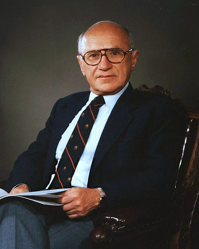

Ideologies / Liberal
What is Neoliberalism?
Neoliberalism is a political ideology in the Liberal family. Friedman argued that competitive markets both produce prosperity and disperse power, which protects liberty. Government should be limited to rules, stable money, enforcing contracts and a minimal safety net such as a negative income tax. The label is mostly used by critics. Friedman called himself a liberal in the classical sense.
Economic freedom is a condition of political freedom.
Defined from: Milton Friedman, Capitalism and Freedom (1962)
See how close you are to Neoliberalism Dare a friend to answer as one

.jpg){kind=link}
Where Neoliberalism stands on 13 axes
Each axis runs from 0 to 100. A score of 50 is the middle. On a classic compass it sits in the Libertarian Right quadrant.
| Axis | Position | Score | In words |
|---|---|---|---|
| EconomyMarket to Planned | 10 | Very strongly Market | |
| OwnershipPrivate to Collective | 5 | Very strongly Private | |
| RightsLiberty to Security | 30 | Strongly Liberty | |
| GovernmentDemocracy to Autocracy | 25 | Strongly Democracy | |
| StructureDecentralised to Centralised | 45 | Balanced | |
| NationInternationalist to Nationalist | 15 | Very strongly Internationalist | |
| ImmigrationMulticulturalist to Assimilationist | 35 | Leans Multiculturalist | |
| ValuesProgressive to Traditional | 40 | Leans Progressive | |
| TechnologyAccelerationist to Precautionary | 20 | Strongly Accelerationist | |
| EnvironmentIndustrialist to Environmentalist | 15 | Very strongly Industrialist | |
| ReligionSecular to Religious | 20 | Strongly Secular | |
| MilitaryPacifist to Militarist | 40 | Leans Pacifist | |
| TradeFree Trade to Protectionist | 3 | Very strongly Free Trade |
Ideologies closest to Neoliberalism
- Minarchist Libertarianism89% alike
- Hayekian Liberalism88% alike
- Singularitarianism87% alike
- Futarchy85% alike
- Effective Accelerationism84% alike
Its opposite on this map is Juche, at 20%.
Parties near Neoliberalism
- Liberal PartyUnited Kingdom. The Newcastle Programme (1891)87% alike
- Free Democratic PartyGermany. Alles lässt sich ändern (2025)85% alike
- Vente VenezuelaVenezuela. Venezuela Tierra de Gracia (2023)81% alike
- Libertarian Party of 1972United States. Libertarian Party Platform (1972)81% alike
Common questions
What is Neoliberalism?
Neoliberalism is a political ideology in the Liberal family. Friedman argued that competitive markets both produce prosperity and disperse power, which protects liberty. Government should be limited to rules, stable money, enforcing contracts and a minimal safety net such as a negative income tax. The label is mostly used by critics. Friedman called himself a liberal in the classical sense.
What does Neoliberalism believe?
In one line: Economic freedom is a condition of political freedom. Its strongest positions are Free Trade, Private, Market. Friedman argued that competitive markets both produce prosperity and disperse power, which protects liberty. Government should be limited to rules, stable money, enforcing contracts and a minimal safety net such as a negative income tax. The label is mostly used by critics. Friedman called himself a liberal in the classical sense.
Who founded Neoliberalism?
Neoliberalism is defined here from Capitalism and Freedom (1962) by Milton Friedman. The thinker most tied to it is Milton Friedman (1912 to 2006).
Is Neoliberalism left wing or right wing?
On a classic two axis compass Neoliberalism falls in the Libertarian Right quadrant, which means the economic right and the libertarian side. Left and right hide a lot, though, which is why EthosScales scores it on thirteen separate axes.
How is Neoliberalism different from Minarchist Libertarianism?
They are close: 89% alike. The biggest gaps are on Rights, where Neoliberalism scores 30 and Minarchist Libertarianism scores 10, and Structure, where Neoliberalism scores 45 and Minarchist Libertarianism scores 25. On each axis, 0 is one end and 100 is the other.
Think this is wrong? Suggest a correction. The scores are editorial estimates.